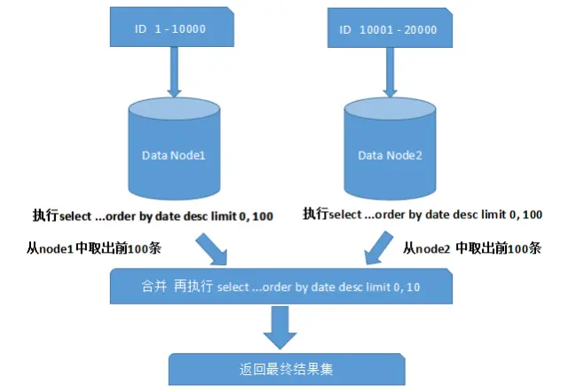

分库分表-基本思路ShardingDB
前言
Sharding的基本思想就要把一个数据库切分成多个部分放到不同的数据库(server)上，从而缓解单一数据库的性能问题。不太严格的讲，对于海量数据的数据库，如果是因为表多而数据多，这时候适合使用垂直切分，即把关系紧密（比如同一模块）的表切分出来放在一个server上。如果表并不多，但每张表的数据非常多，这时候适合水平切分，即把表的数据按某种规则（比如按ID散列）切分到多个数据库(server)上。当然，现实中更多是这两种情况混杂在一起，这时候需要根据实际情况做出选择，也可能会综合使用垂直与水平切分，从而将原有数据库切分成类似矩阵一样可以无限扩充的数据库(server)阵列。
需要特别说明的是：当同时进行垂直和水平切分时，切分策略会发生一些微妙的变化。比如：在只考虑垂直切分的时候，被划分到一起的表之间可以保持任意的关联关系，因此你可以按“功能模块”划分表格，但是一旦引入水平切分之后，表间关联关系就会受到很大的制约，通常只能允许一个主表（以该表ID进行散列的表）和其多个次表之间保留关联关系，也就是说：当同时进行垂直和水平切分时，在垂直方向上的切分将不再以“功能模块”进行划分，而是需要更加细粒度的垂直切分，而这个粒度与领域驱动设计中的“聚合”概念不谋而合，甚至可以说是完全一致，每个shard的主表正是一个聚合中的聚合根！这样切分下来你会发现数据库分被切分地过于分散了（shard的数量会比较多，但是shard里的表却不多），为了避免管理过多的数据源，充分利用每一个数据库服务器的资源，可以考虑将业务上相近，并且具有相近数据增长速率（主表数据量在同一数量级上）的两个或多个shard放到同一个数据源里，每个shard依然是独立的，它们有各自的主表，并使用各自主表ID进行散列，不同的只是它们的散列取模（即节点数量）必需是一致的.
常用的分库分表中间件
简单易用的组件：
强悍重量级的中间件：
- sharding
- TDDL Smart Client的方式（淘宝）
- Atlas(Qihoo 360)
- alibaba.cobar(是阿里巴巴（B2B）部门开发)
- MyCAT（基于阿里开源的Cobar产品而研发）
- Oceanus(58同城数据库中间件)
- OneProxy(支付宝首席架构师楼方鑫开发)
- vitess（谷歌开发的数据库中间件）
分库分表需要解决的问题
1、事务问题
解决事务问题目前有两种可行的方案：分布式事务和通过应用程序与数据库共同控制实现事务下面对两套方案进行一个简单的对比。
方案一：使用分布式事务
- 优点：交由数据库管理，简单有效
- 缺点：性能代价高，特别是shard越来越多时
方案二：由应用程序和数据库共同控制
- 原理：将一个跨多个数据库的分布式事务分拆成多个仅处 于单个数据库上面的小事务，并通过应用程序来总控 各个小事务。
- 优点：性能上有优势
- 缺点：需要应用程序在事务控制上做灵活设计。如果使用 了spring的事务管理，改动起来会面临一定的困难。
2、跨节点Join的问题
只要是进行切分，跨节点Join的问题是不可避免的。但是良好的设计和切分却可以减少此类情况的发生。解决这一问题的普遍做法是分两次查询实现。在第一次查询的结果集中找出关联数据的id,根据这些id发起第二次请求得到关联数据。
3、跨节点的count,order by,group by以及聚合函数问题
这些是一类问题，因为它们都需要基于全部数据集合进行计算。多数的代理都不会自动处理合并工作。解决方案：与解决跨节点join问题的类似，分别在各个节点上得到结果后在应用程序端进行合并。和join不同的是每个结点的查询可以并行执行，因此很多时候它的速度要比单一大表快很多。但如果结果集很大，对应用程序内存的消耗是一个问题。
4、数据迁移，容量规划，扩容等问题
来自淘宝综合业务平台团队，它利用对2的倍数取余具有向前兼容的特性（如对4取余得1的数对2取余也是1）来分配数据，避免了行级别的数据迁移，但是依然需要进行表级别的迁移，同时对扩容规模和分表数量都有限制。总得来说，这些方案都不是十分的理想，多多少少都存在一些缺点，这也从一个侧面反映出了Sharding扩容的难度。
5、事务
分布式事务
参考： 关于分布式事务、两阶段提交、一阶段提交、Best Efforts 1PC模式和事务补偿机制的研究
优点
- 基于两阶段提交，最大限度地保证了跨数据库操作的“原子性”，是分布式系统下最严格的事务实现方式。
- 实现简单，工作量小。由于多数应用服务器以及一些独立的分布式事务协调器做了大量的封装工作，使得项目中引入分布式事务的难度和工作量基本上可以忽略不计。
缺点
- 系统“水平”伸缩的死敌。基于两阶段提交的分布式事务在提交事务时需要在多个节点之间进行协调,最大限度地推后了提交事务的时间点，客观上延长了事务的执行时间，这会导致事务在访问共享资源时发生冲突和死锁的概率增高，随着数据库节点的增多，这种趋势会越来越严重，从而成为系统在数据库层面上水平伸缩的”枷锁”， 这是很多Sharding系统不采用分布式事务的主要原因。
基于Best Efforts 1PC模式的事务
参考spring-data-neo4j的实现。鉴于Best Efforts 1PC模式的性能优势，以及相对简单的实现方式，它被大多数的sharding框架和项目采用。
事务补偿（幂等值）
对于那些对性能要求很高，但对一致性要求并不高的系统，往往并不苛求系统的实时一致性，只要在一个允许的时间周期内达到最终一致性即可，这使得事务补偿机制成为一种可行的方案。事务补偿机制最初被提出是在“长事务”的处理中，但是对于分布式系统确保一致性也有很好的参考意义。笼统地讲，与事务在执行中发生错误后立即回滚的方式不同，事务补偿是一种事后检查并补救的措施，它只期望在一个容许时间周期内得到最终一致的结果就可以了。事务补偿的实现与系统业务紧密相关，并没有一种标准的处理方式。一些常见的实现方式有：对数据进行对帐检查;基于日志进行比对;定期同标准数据来源进行同步，等等。
6、ID问题
一旦数据库被切分到多个物理结点上，我们将不能再依赖数据库自身的主键生成机制。一方面，某个分区数据库自生成的ID无法保证在全局上是唯一的；另一方面，应用程序在插入数据之前需要先获得ID,以便进行SQL路由。
一些常见的主键生成策略：
UUID
使用UUID作主键是最简单的方案，但是缺点也是非常明显的。由于UUID非常的长，除占用大量存储空间外，最主要的问题是在索引上，在建立索引和基于索引进行查询时都存在性能问题。
结合数据库维护一个Sequence表
此方案的思路也很简单，在数据库中建立一个Sequence表，表的结构类似于：
CREATE TABLE `SEQUENCE` (
`table_name` varchar(18) NOT NULL,
`nextid` bigint(20) NOT NULL,
PRIMARY KEY (`table_name`)
) ENGINE=InnoDB每当需要为某个表的新纪录生成ID时就从Sequence表中取出对应表的nextid,并将nextid的值加1后更新到数据库中以备下次使用。此方案也较简单，但缺点同样明显：由于所有插入任何都需要访问该表，该表很容易成为系统性能瓶颈，同时它也存在单点问题，一旦该表数据库失效，整个应用程序将无法工作。有人提出使用Master-Slave进行主从同步，但这也只能解决单点问题，并不能解决读写比为1:1的访问压力问题。
Twitter的分布式自增ID算法Snowflake
在分布式系统中，需要生成全局UID的场合还是比较多的，twitter的snowflake解决了这种需求，实现也还是很简单的，除去配置信息，核心代码就是毫秒级时间41位 机器ID 10位 毫秒内序列12位。
* 10---0000000000 0000000000 0000000000 0000000000 0 --- 00000 ---00000 ---000000000000在上面的字符串中，第一位为未使用（实际上也可作为long的符号位），接下来的41位为毫秒级时间，然后5位datacenter标识位，5位机器ID（并不算标识符，实际是为线程标识），然后12位该毫秒内的当前毫秒内的计数，加起来刚好64位，为一个Long型。
这样的好处是，整体上按照时间自增排序，并且整个分布式系统内不会产生ID碰撞（由datacenter和机器ID作区分），并且效率较高，经测试，snowflake每秒能够产生26万ID左右，完全满足需要。
7、跨分片的排序分页
一般来讲，分页时需要按照指定字段进行排序。当排序字段就是分片字段的时候，我们通过分片规则可以比较容易定位到指定的分片，而当排序字段非分片字段的时候，情况就会变得比较复杂了。为了最终结果的准确性，我们需要在不同的分片节点中将数据进行排序并返回，并将不同分片返回的结果集进行汇总和再次排序，最后再返回给用户。如下图所示：
上面图中所描述的只是最简单的一种情况（取第一页数据），看起来对性能的影响并不大。但是，如果想取出第10页数据，情况又将变得复杂很多，如下图所示：

有些读者可能并不太理解，为什么不能像获取第一页数据那样简单处理（排序取出前10条再合并、排序）。其实并不难理解，因为各分片节点中的数据可能是随机的，为了排序的准确性，必须把所有分片节点的前N页数据都排序好后做合并，最后再进行整体的排序。很显然，这样的操作是比较消耗资源的，用户越往后翻页，系统性能将会越差。
那如何解决分库情况下的分页问题呢？有以下几种办法：
如果是在前台应用提供分页，则限定用户只能看前面n页，这个限制在业务上也是合理的，一般看后面的分页意义不大（如果一定要看，可以要求用户缩小范围重新查询）。
如果是后台批处理任务要求分批获取数据，则可以加大page size，比如每次获取5000条记录，有效减少分页数（当然离线访问一般走备库，避免冲击主库）。
分库设计时，一般还有配套大数据平台汇总所有分库的记录，有些分页查询可以考虑走大数据平台。
8、分库策略
分库维度确定后，如何把记录分到各个库里呢?
一般有两种方式：
- 根据数值范围，比如用户Id为1-9999的记录分到第一个库，10000-20000的分到第二个库，以此类推。
- 根据数值取模，比如用户Id mod n，余数为0的记录放到第一个库，余数为1的放到第二个库，以此类推。
优劣比较：
评价指标按照范围分库按照Mod分库
库数量前期数目比较小，可以随用户/业务按需增长前期即根据mode因子确定库数量，数目一般比较大
访问性能前期库数量小，全库查询消耗资源少，单库查询性能略差前期库数量大，全库查询消耗资源多，单库查询性能略好
调整库数量比较容易，一般只需为新用户增加库，老库拆分也只影响单个库困难，改变mod因子导致数据在所有库之间迁移
数据热点新旧用户购物频率有差异，有数据热点问题新旧用户均匀到分布到各个库，无热点
实践中，为了处理简单，选择mod分库的比较多。同时二次分库时，为了数据迁移方便，一般是按倍数增加，比如初始4个库，二次分裂为8个，再16个。这样对于某个库的数据，一半数据移到新库，剩余不动，对比每次只增加一个库，所有数据都要大规模变动。
补充下，mod分库一般每个库记录数比较均匀，但也有些数据库，存在超级Id，这些Id的记录远远超过其他Id，比如在广告场景下，某个大广告主的广告数可能占总体很大比例。如果按照广告主Id取模分库，某些库的记录数会特别多，对于这些超级Id，需要提供单独库来存储记录
9、分库数量
分库数量首先和单库能处理的记录数有关，一般来说，Mysql 单库超过5000万条记录，Oracle单库超过1亿条记录，DB压力就很大(当然处理能力和字段数量/访问模式/记录长度有进一步关系)。
在满足上述前提下，如果分库数量少，达不到分散存储和减轻DB性能压力的目的；如果分库的数量多，好处是每个库记录少，单库访问性能好，但对于跨多个库的访问，应用程序需要访问多个库，如果是并发模式，要消耗宝贵的线程资源；如果是串行模式，执行时间会急剧增加。
最后分库数量还直接影响硬件的投入，一般每个分库跑在单独物理机上，多一个库意味多一台设备。所以具体分多少个库，要综合评估，一般初次分库建议分4-8个库。
10、路由透明
分库从某种意义上来说，意味着DB schema改变了，必然影响应用，但这种改变和业务无关，所以要尽量保证分库对应用代码透明，分库逻辑尽量在数据访问层处理。当然完全做到这一点很困难，具体哪些应该由DAL负责，哪些由应用负责，这里有一些建议：
对于单库访问，比如查询条件指定用户Id，则该SQL只需访问特定库。此时应该由DAL层自动路由到特定库，当库二次分裂时，也只要修改mod 因子，应用代码不受影响。
对于简单的多库查询，DAL负责汇总各个数据库返回的记录，此时仍对上层应用透明。
11、使用框架还是自主研发
目前市面上的分库分表中间件相对较多，其中基于代理方式的有MySQL Proxy和Amoeba，基于Hibernate框架的是Hibernate Shards，基于jdbc的有当当sharding-jdbc，基于mybatis的类似maven插件式的有蘑菇街的蘑菇街TSharding，通过重写spring的ibatis template类是Cobar Client，这些框架各有各的优势与短板，架构师可以在深入调研之后结合项目的实际情况进行选择，但是总的来说，我个人对于框架的选择是持谨慎态度的。一方面多数框架缺乏成功案例的验证，其成熟性与稳定性值得怀疑。另一方面，一些从成功商业产品开源出框架（如阿里和淘宝的一些开源项目）是否适合你的项目是需要架构师深入调研分析的。当然，最终的选择一定是基于项目特点、团队状况、技术门槛和学习成本等综合因素考量确定的。